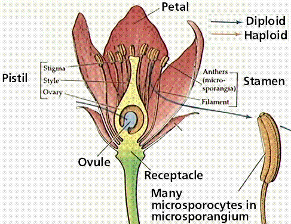
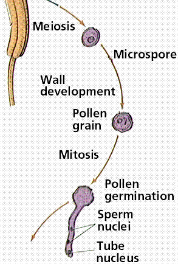
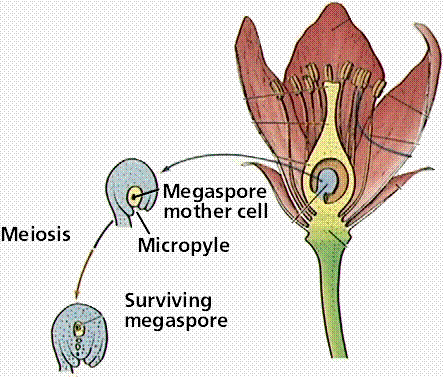
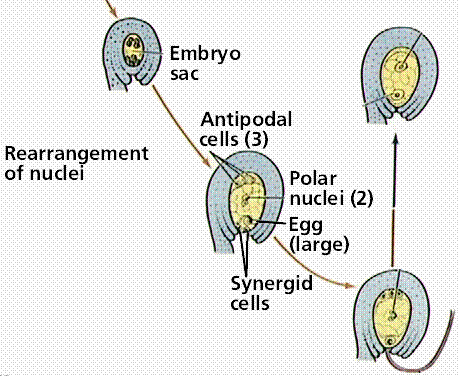

Life Cycles | Angiosperms | Flowers | Links
Animal life cycles have meiosis followed immediately by gametogenesis. Gametes are produced directly by meiosis. Male gametes are sperm. Female gametes are eggs or ova.
The plant life cycle has mitosis occurring in spores, produced by meiosis, that germinate into the gametophyte phase. Gametophyte size ranges from three cells (in pollen) to several million (in a "lower plant" such as moss). Alternation of generations occurs in plants, where the sporophyte phase is succeeded by the gametophyte phase. The sporophyte phase produces spores by meiosis within a sporangium. The gametophyte phase produces gametes by mitosis within an antheridium (producing sperm) and/or archegonium (producing eggs). Within the plant kingdom the dominance of phases varies. Nonvascular plants, the mosses and liverworts, have the gametophyte phase dominant. Vascular plants show a progression of increasing sporophyte dominance from the ferns and "fern allies" to angiosperms.
The above image is reduced from gopher://wiscinfo.wisc.edu:2070/I9/.image/.bot/.130/Angiosperm/Angiosperm_life_cycle. Follow that link to view a larger image.
A diagram series is available by clicking on the following links: lifecycle 1 lifecycle 2 lifecycle 3.




The life cycle of a flowering plant. Images from Purves et al., Life: The Science of Biology, 4th Edition, by Sinauer Associates (www.sinauer.com) and WH Freeman (www.whfreeman.com), used with permission.
Flowering plants, the angiosperms, were the last of the seed plant groups to evolve, appearing over 100 million years ago during the middle of the Age of Dinosaurs (late Jurassic). All flowering plants produce flowers and if they are sexually reproductive, they produce a diploid zygote and triploid endosperm.
Whence came the angiosperms? This was Darwin's "abominable mystery". Clearly angiosperms are descended from some group of Mesozoic-aged gymnosperm seed plant....but which one? Click here to view an online lab exercise in phylogeny and try to figure things out!
The classical view of flowering plant evolution suggests early angiosperms were evergreen trees that produced large Magnolia-like flowers. Click here to view an illustration of suggested paths of floral evolution.
Flowers are collections of reproductive and sterile tissue arranged in a tight whorled array having very short internodes. Sterile parts of flowers are the sepals and petals. When these are similar in size and shape, they are termed tepals. Reproductive parts of the flower are the stamen (male, collectively termed the androecium) and carpel (often the carpel is referred to as the pistil, the female parts collectively termed the gynoecium).

A picture of a lily. The above image is reduced from gopher://wiscinfo.wisc.edu:2070/I9/.image/.bot/.130/Angiosperm/Lilium/Flower_dissection/Flower. Follow that link to view a larger image of this flower of Lilium (lily).
The individual units of the androecium are the stamens, which consist of a filament which supports the anther. The anther contains four microsporangia within which microspores (pollen) are produced by meiosis.
Anther cross section of a Lilium flower. The above image is cropped, reduced, and labeled from gopher://wiscinfo.wisc.edu:2070/I9/.image/.bot/.130/Angiosperm/Lilium/Adroecium/Anther_tapetum. Follow the link to view a larger image.
Stamens are thought to represent modified sporophylls (leaves with sporangia on their upper surface). Examinations by James E. Canright in the 1950s suggested an evolutionary series from primitive angiosperms (like Austrobaileya ) which have leafish stamens to others with "normal" stamens (Lilium).
Hypothesized evolutionary pathway for the development of the anther. Image from Purves et al., Life: The Science of Biology, 4th Edition, by Sinauer Associates (www.sinauer.com) and WH Freeman (www.whfreeman.com), used with permission.
Pollen grains (from the greek palynos for dust or pollen) contain the male gametophyte (microgametophyte) phase of the plant. Pollen grains are produced by meiosis of microspore mother cells that are located along the inner edge of the anther sacs (microsporangia). The outer part of the pollen is the exine, which is composed of a complex polysaccharide, sporopollenin. Inside the pollen are two (or, at most, three) cells that comprise the male gametophyte. The tube cell (also referred to as the tube nucleus) develops into the pollen tube. The germ cell divides by mitosis to produce two sperm cells. Division of the germ cell can occur before or after pollination.

Mature 2-cell stage of a pollen grain. Note the thick sculptured exine around the pollen grain of Lilium. The above image is cropped and reduced from gopher://wiscinfo.wisc.edu:2070/I9/.image/.bot/.130/Angiosperm/Lilium/Adroecium/Mature_2-celled_pollen_grains.
The gynoecium consists of the stigma, style, and ovary containing one or more ovules. These three structures are often termed a pistil or carpel. In many plants, the pistils will fuse for all or part of their length.
Lilium gynoecium. The above image is reduced and relabeled from gopher://wiscinfo.wisc.edu:2070/I9/.image/.bot/.130/Angiosperm/Lilium/Flower_dissection/Ovary.
Like the stamen, the carpel is thought to be a modified leaf. Work by I.W. Bailey and his students pointed to an evolutionary sequence from primitive angiosperms (like Drimys ) to "normal" carpels like those of Lilium..
Hypothesized steps in the evolution of the carpel. Image from Purves et al., Life: The Science of Biology, 4th Edition, by Sinauer Associates (www.sinauer.com) and WH Freeman (www.whfreeman.com), used with permission.
The Stigma and Style
The stigma functions as a receptive surface on which pollen lands and germinates its pollen tube. Corn silk is part stigma, part style. The style serves to move the stigma some distance from the ovary. This distance is species specific.
The Ovary
The ovary contains one or more ovules, which in turn contain one female gametophyte, also referred to in angiosperms as the embryo sac. Some plants, such as cherry, have only a single ovary which produces two ovules. Only one ovule will develop into a seed.
Back to Table of Contents | FLOWERING PLANT REPRODUCTION: Fertilization and Fruits
Email: mj.farabee@emcmail.maricopa.edu
Last modified:
The URL of this page is:
{kind=link}
{kind=link}
{kind=link}